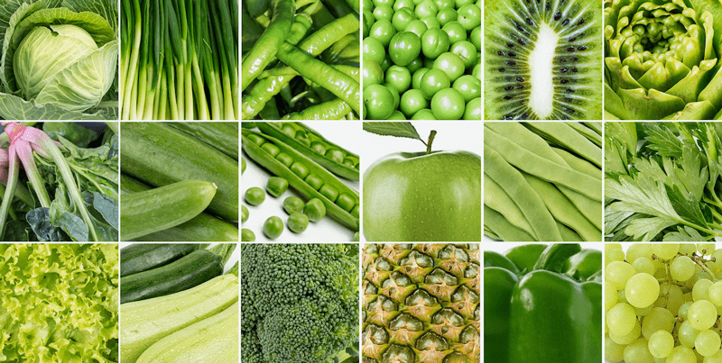
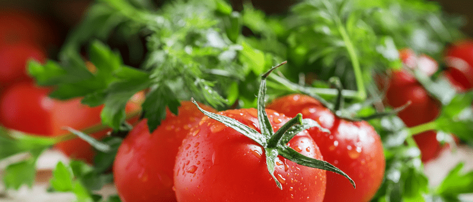

Whole Food Lifestyle | No Matter Your Eating Style
With hundreds of dietary food labels flooding the markets, the internet, and social media…how are we supposed to understand how or what to eat? Today, I will briefly touch on what I refer to as foundational eating. No matter what format of eating you follow —raw, vegan, paleo, keto, vegetarian, etc. —our foundation should be built upon nutrient-dense whole foods!
If you’ll give me ten minutes of your time, I would like to share how I approach a whole food diet. If you find yourself ready to get on board after reading this post, you can check out my (1600+) raw vegan recipes (here) and my new (quickly growing) section on cooked vegan foods (here). If you have spent time Googling how to eat healthfully and walked away even more confused than ever… allow me to share some simple ways to approach food.
Whole Foods
The definition of a whole food often depends on whom you ask. I consider whole foods to be unrefined foods that don’t contain any added preservatives or additives, and which are as close as possible to the original form. Simple examples include fruits and vegetables, like whole apples and carrots. Whole grains, nuts, and seeds are also whole foods because they contain their heartier, nutrient-dense components.
A good rule of thumb is to ask: Has anything been added to this product to extend its shelf life or make it last longer? Does the ingredient list include any chemical additives, preservatives, or multi-syllable words that are hard to pronounce? If the answer is yes, then it’s likely not a whole food.

Nutrient-Dense Foods
The idea of nutrient density looks beyond calories and focuses on quality over quantity. Nutrient-dense foods contain the nutrients that allow your body to create long-lasting energy and optimal health. Eating nutrient-dense foods is like fueling a sports car with the best gasoline available.
Which foods are nutrient-dense? Whole, unrefined, and unprocessed foods. Here are a few examples:
- Colorful vegetables, like kale, spinach, beets, and broccoli
- Complex carbohydrates, like whole grains, fruits, and vegetables
- Foods that contain protein, like beans and lentils
- Healthy fats like avocados, nuts, and seeds
In addition, local, organic, and seasonal vegetables tend to be fresher and picked when ripe. This makes them more nutrient-dense than those that have been transported from far away or that have been grown out of season.

How to Transform into a Whole Food Lifestyle
Think of it this way–whole foods are single items that are tangible. You can hold each ingredient in your hand and name it without slurring your words due to not being able to pronounce them. Just this simple act alone will quickly create a clear understanding of what whole foods are and take the confusion out of things.
Foods without labels
- Selecting foods without labels is step one. Typically, those shiny packages of processed foods that you see at the grocery store are products that have been advertised and marketed to the masses are usually not in support of your health. Think about it…when was the last time you saw a commercial for apples or kale?
Eat Seasonally
- Have you ever been to your local farmer’s market? Farmers come together to sell produce that they are currently harvesting, which means they are picked at full maturity, which increases their nutrients. Click (here) to read more about this topic.

Learn How to Shop, Store, and Select Whole Foods
Learn to Cook from Scratch
Now is the time to channel your ancestors. They hold the wisdom regarding how to cook whole foods. Read my article called Recovering the Lost Art of Preparing Foods from Scratch. Now is the time to get back in the kitchen. Create family meals, cook together, and make a practice of giving gratitude.
Pitfalls to Watch out for with Packaged Foods
Even after you have worked through the transition, you will most likely purchase some things that come in a package. For this reason, it’s essential to be able to read ingredient lists so that you can make informed decisions about what you’re buying.
- Know your ingredients. Ensure you know where your ingredients come from, and try to avoid artificial preservatives, colorings, and additives, which can be hard for your body to process.
- Pay attention to the order of ingredients. The first ingredient is always the most predominant in the product, so look for the best, most nutrient-dense ingredient to be first on the list.
- Understand the many names in which sugar can creep into packaged foods. I have a post called Transitioning away from Refined Sugar (+PDF). It has a printable PDF of all the sugar names out there. Print it and tack it to your fridge for quick reference.
- Watch and avoid foods that contain any of the following items in the ingredient list: Monosodium glutamate, or MSG; aspartame or sucralose; artificial colorings and flavorings, yellow dye #5; BHT (a preservative); and hydrogenated oils.
Get Your Family On Board
So, you decided to incorporate more whole foods into your diet…I am thrilled! For those of you who have other people in the house, it may be challenging to get them on board as well. If that is the case, read my post on How to Encourage Loved Ones to Eat Healthy. It may be challenging. First and foremost, lead by example, and walk in love and patience.
I hope this post inspires you to look deeper into the foods that you buy, prepare, and set before your family. If you have any further questions, please leave a comment below. Blessings and health, amie sue
© AmieSue.com